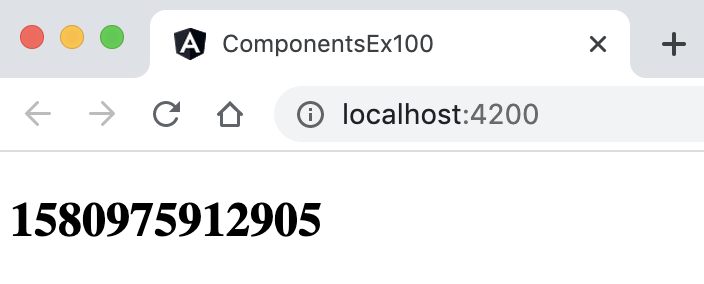
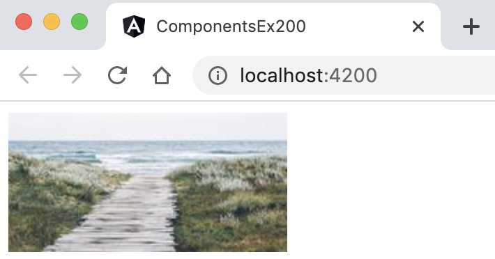
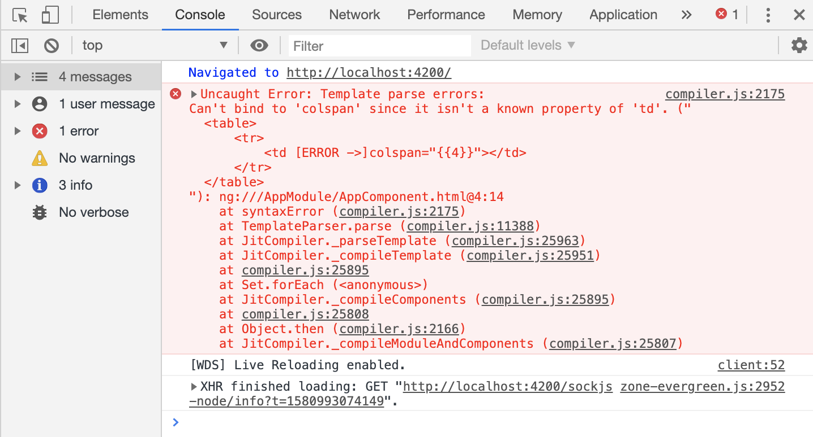
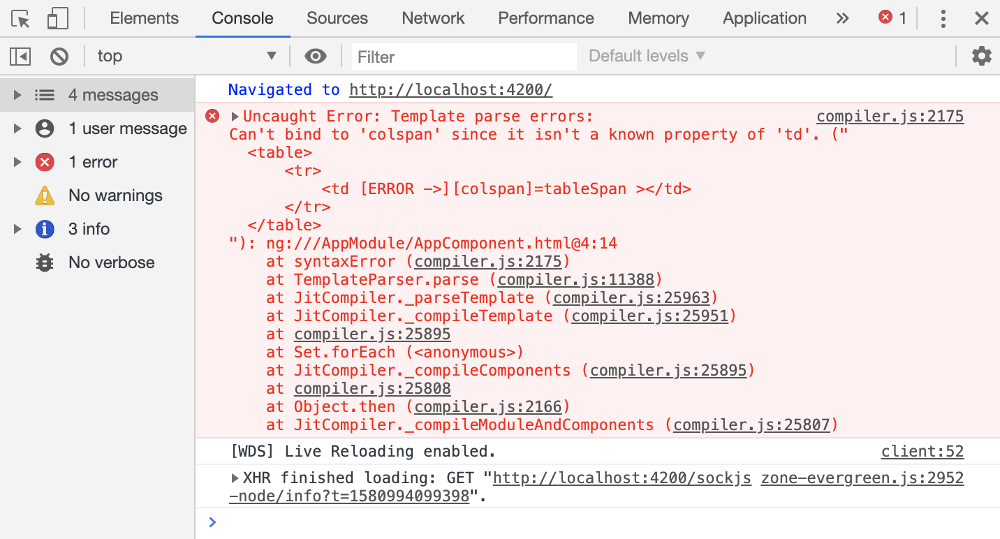
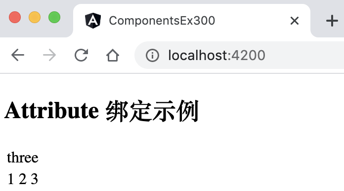
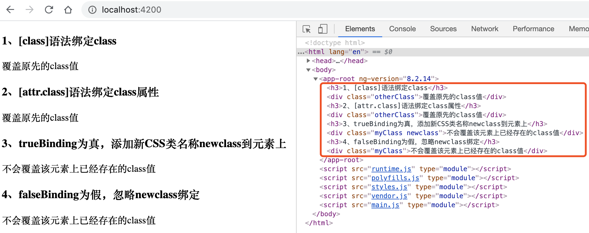
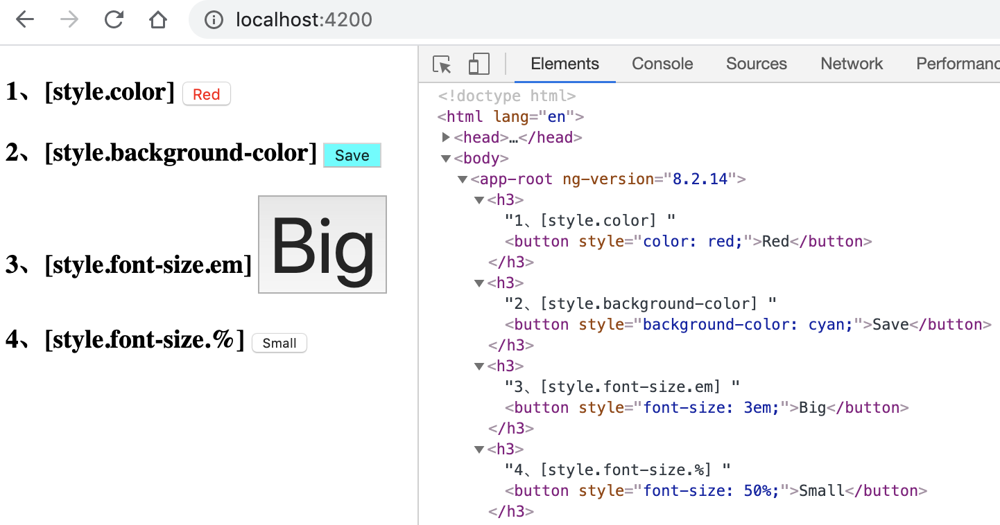
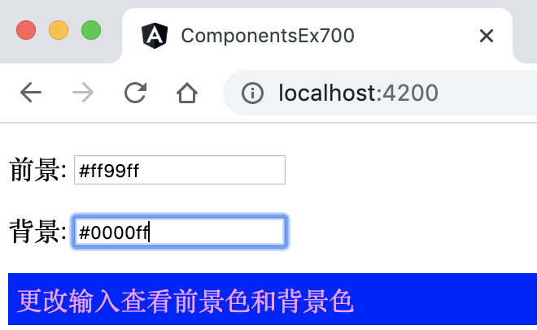
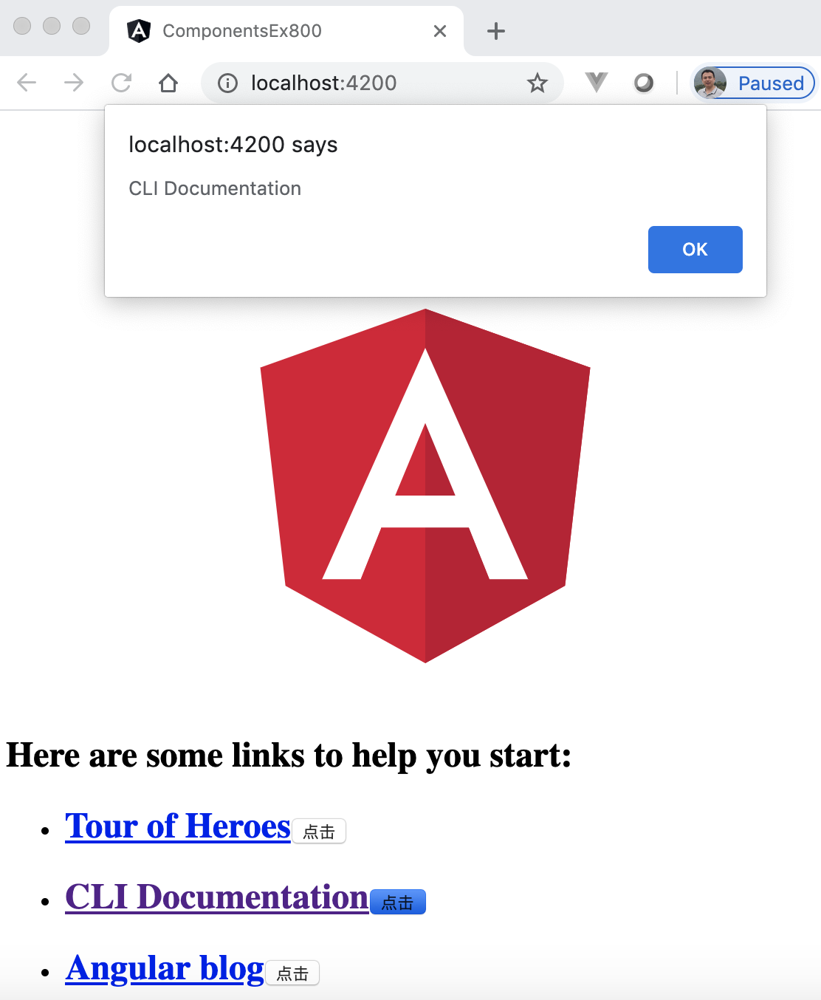

6 学习Angular组件知识¶
Angular组件（Component） 是构成Angular应用的基础和核心。Angular组件的作用就是渲染页面，应用程序的页面就是由一个个的组件搭建起来的。 Angular的架构采用MVVM模式设计（详情见本书第2章节），指的就是Angular中的组件设计。组件化的目的有两个：一是解耦，把逻辑封装在内部，每一个组件都是功能相对单一和独立的个体；二是复用，封装成组件之后可以在项目中重复使用。
6.1 什么是Angular组件¶
Angular组件对应的是Component类文件，默认情况下，它是TypeScript语言编写的，在组件中绑定了模板和样式，组件控制着模板中的元素，如视图显示和触发事件等。用户在Component类中定义组件的应用逻辑，为视图提供支持。组件通过一些由属性和方法组成的API与视图交互。
所有Angular应用程序都有一个根组件，通常被称为App组件，App组件下面可以存在若干个子组件。Angular为组件提供了相互传递数据和响应彼此事件的方法。稍后会介绍组件的输入和输出。组件被设计为自包含且松散耦合的结构，每个组件都包含自身的有关数据：
它需要什么输入数据；
它可能向外界发射的事件；
如何展示自己；
它的依赖性是什么。
通常，每个组件有3个文件组成：模板（Template）文件，类（TypeScript）文件和样式（CSS）文件。 默认情况下，Angular项目框架中已经有了一个App组件：
app.component.html：模板文件
app.component.ts：组件的类文件
app.component.css：模板样式文件
组成组件的子文件及个数不是固定的，这里有更多选择：
在组件的类文件中包含样式（被称为内联样式）。可以使用Angular CLI命令的选项
--inline-style生成具有内联样式的组件。在组件的类文件中包含模板（被称为内联模板）。可以使用Angular CLI命令的选项
--inline-template生成具有内联模板的组件。在同一文件中包含多个组件类：用户可以在同一类文件中组合多个组件。如下代码所示：
import { Component } from '@angular/core'; @Component({ selector: 'Paragraph', // 内联模板 template: ` <p><ng-content></ng-content></p> `, styles: ['p { border: 1px solid #c0c0c0; padding: 10px }'] // 内联样式 }) export class Paragraph { // Paragraph类 } @Component({ selector: 'app-root', // 内联模板 template: ` <p>可以在同一文件中组合多个组件</p> `, styles: ['p { border: 1px solid black }'] // 内联样式 }) export class AppComponent { // AppComponent类 title = 'welcome to app!'; }
上述代码完成了以下内容：
在App组件类文件中同时还包含了另一个组件类：Paragraph类；
两个组件类均使用了内联模板和内联样式。
6.2 组件模板有哪几种¶
Angular中的组件模板就是MVVM设计模式中的V（VIEW），它扮演的是一个视图的角色，简单讲就是展示给用户看的部分。组件模板包含用于在Web浏览器中显示组件的标记代码，Angular组件通过@Component装饰器把组件类和模板关联在一起。
HTML是Angular模板的默认语言，除了 <script> 元素是被禁用的外，几乎所有其他的HTML语法都是有效的模板语法。
有些合法的HTML被用在模板中是没有意义的。如<html>、<body> 和 <base> 元素在模板中没有作用。剩下的所有元素基本上就都一样用了。
Angular组件类中有两种方法为组件指定渲染模板，分别是内联模板和外部模板。
6.2.1 内联模板¶
通过@Component装饰器中的template属性直接指定内联模板，比如：
@Component({ template : `<h1>hello</h1> <div>...</div>` })
template属性的值用反引号（`）引用的一个多行字符串，这些字符串是标准的HTML语言。
6.2.2 外部模板¶
通过@Component装饰器中的templateUrl属性引用外部模板，比如：
@Component({ templateUrl : "./app.component.html" })
templateUrl属性的值是模板文件的URL，上述代码表示引用的是当面目录下的app.component.html文件。
至于是选择内联模板还是外部模板，并没有绝对的依据，用户根据自己的实际情况来抉择。内联模板能减少文件量，适合模板内容简单，代码少的场景。
6.2.3 矢量图模板¶
除了HTML模板外，Angular 8还支持使用矢量图（svg格式文件）作为模版，如使用.svg图形作为组件模板来动态生成交互式图形，代码如下：
@Component({ selector: "app-icon", templateUrl: "./icon.component.svg", styleUrls: ["./icon.component.css"] })
6.3 组件样式介绍¶
在Angular应用程序中可以使用所有的CSS样式来修饰模板元素，渲染页面，还可以把样式的有效范围限制在组件模板中。组件样式不同于传统样式，它仅限于当前组件有效，换言之，除组件外的其他任何HTML元素都不会受影响。
在组件模块化里，这种方式的CSS比传统CSS更加有优势，体现在下面这些方面：
支持CSS类名和选择器，且限当前组件上下文有意义。
CSS类名和选择器不会与应用程序中其他类和选择器相冲突。
应用程序的其他地方无法修改组件样式。
组件的CSS代码、组件类、HTML代码可以放在同一文件里。
随时可以更改或删除组件的CSS代码，不必担心可能在别的地方已经被使用，只关心组件自身。
关于CSS的基础知识，本书在第2章节中有详细的介绍。
6.4 组件类的构成¶
Angular中的组件类就是MVVM设计模式中的VM（ViewModel 视图模型），ViewModel是View和Model的粘合体，负责View和Model的交互和协作。组件类的作用是控制模板渲染，下面进行详细的介绍。
6.4.1 组件类装饰器¶
Angular中用@Component装饰器声明组件类，@Component装饰器会指出紧随其后的那个类是个组件类，并告知Angular如何处理这个组件类，该装饰器包含多个属性，这些属性和值称为元数据。元数据告诉Angular到哪里获取它需要的主要构造块，以创建和展示这个组件及其视图。Angular会根据元数据的值来渲染组件并执行组件的逻辑。具体来说，它把一个模板、样式和该组件类关联起来，该组件类及其模板、样式，共同描述了一个视图。
除了包含或指向模板和样式之外，@Component的元数据还会配置要如何在HTML中引用该组件，以及该组件需要哪些服务等等。
使用Angular CLI生成的项目默认包含的App组件中有一个app.component.ts文件，该文件是App组件的类文件，里面可以看到以下@Component元数据：
@Component({ selector: 'app-root', templateUrl: './app.component.html', styleUrls: ['./app.component.css'] }) export class AppComponent { title = '***'; }
上述代码中展示了一些最常用的@Component元数据的配置选项：
selector：是一个CSS选择器，它会告诉Angular，一旦在模板HTML中找到了这个选择器对应的标签，就创建并插入该组件的一个实例。 比如，项目的根HTML文件中包含了<app-root></app-root>标签，当代码运行到此处时，Angular就会在这个标签中插入一个AppComponent实例的视图。
templateUrl：该组件的HTML模板文件，引用的当前目录下的app.component.html文件。这个模板定义了该组件的视图。
styleUrls：该组件的CSS样式文件，引用的当前目录下的app.component.css文件。这个模板定义了该组件模板的样式。
除了上面的配置外，@Component的元数据还可以包含表6-1中的配置选项，其中的部分内容将会在本书中陆续的进行介绍。
元数据配置选项 |
说明 |
|---|---|
animations |
当前组件的动画列表 |
changeDetection |
指定使用的变化监测策略 |
encapsulation |
当前组件使用的样式封装策略 |
entryComponents |
动态插当前组件视图的组件列表 |
exportAs |
给指令分配一个变量，使其可以在模板中使用 |
inputs |
指定组件的输入属性。 |
interpolation |
当前组件模板中使用的自定义插值标记，默认是{{}} |
moduleId |
包含该组件模块的id，他被用于解析模板和样式的相对路径 |
outputs |
指定组件的输出属性，显示其他组件可以订阅的输出事件的类属性名称列表 |
providers |
指定该组件及其所有子组件可用的服务依赖注入 |
queries |
设置需要被注入到组件的查询 |
viewProviders |
指定该组件及其所有子组件可用的服务 |
6.4.2 组件类基础¶
对比MVVM设计模式，在Angular的上下文中，可以说模型是Component类中的数据，View是组件模板，ViewModel可以是Component类中的代码。
Angular组件类是一个普通的TypeScript类，因此TypeScript类的特征完全适合组件类。比如它可以实现接口，可以继承其他类，也可以使用构造函数（constructor）初始化类成员。
组件类里包含组件的数据和代码。数据包含在变量中，变量可以绑定到模板中的HTML标记。代码可以响应用户事件（例如单击按钮），也可以调用自身来执行操作。 下面从数据绑定开始，来讲解组件类与模板是如何交互的。
6.5 组件类与模板的数据绑定方式¶
数据绑定是JS框架中最重要的概念之一。在应用程序中数据绑定是模型中的变量（或逻辑）对视图的反映。每当变量更改时，视图都必须更新DOM（文档对象模型）以反映新的更改。简单的说，数据绑定的目的就是要达到数据和视图的快速同步。
模板和数据的绑定也是Angular的核心概念之一。在Angular中使用组件时，是通过模板渲染来显示组件内容。组件模板通过数据绑定来动态设置DOM的值。如：实现把组件数据映射到模板上，或者从模板（如input控件）中取回数据到组件中。
数据绑定按照数据的流向分类主要有两种：单向数据绑定和双向数据绑定，下面分别进行介绍。
6.5.1 什么是单向数据绑定¶
这是组件类的属性与组件模板的单向绑定。因此，当组件类中的属性更改时，模板也会更新以反映新的更改。
从某种意义上说，这种绑定是单向的，更新“模型”的属性，“视图”也将自动的映射更新了，或者“模型”的变量保持与“视图”的数据同步。数据流是从“模型到视图”或“视图到模型”的一个方向。
6.5.2 使用插值显示属性的值¶
在模板视图中显示组件类的属性，最简单的方式就是通过插值来绑定属性名。使用插值的语法就是把属性名包裹在双花括号里，如 {{message}}。 下面代码示例中使用插值显示属性的值：
@Component({ template: ` <div> {{message}} </div> ` }) export class AppComponent { message = "My Message" }
上述代码中，AppComponent组件类中定义了一个类属性：message，同时在模板视图中，使用{{message}}来绑定message属性的值。 本质上，插值使用双花括号”{{}}”来告诉Angular，在模板视图中的“{{}}”里渲染模型数据。现在在AppComponent中渲染模板时，{{message}}被替换为“My Message”。
Angular自动从组件中提取message属性的值，并且把值插入浏览器中。当组件类中的message属性值发生变化时，Angular就会自动刷新模板视图并显示新的值。
下面示例演示修改组件类中message属性时，视图发生的变化。
6.5.3 [示例 components-ex100] 使用插值显示属性的值¶
用Angular CLI构建应用程序，具体命令如下：
ng new components-ex100 -s -t --interactive=false
启动服务，具体命令如下：
ng serve
查看应用程序结果。打开Web浏览器并浏览到 “http://localhost:4200”，应该看到文本 “Welcome to components-ex100!”。
编辑组件。编辑文件src/app/app.component.ts，并将其更改为以下内容：
import { Component, AfterViewInit } from '@angular/core'; @Component({ selector: 'app-root', template: ` <div> <h2> {{message}} </h2> </div> `, styles: [] }) export class AppComponent implements AfterViewInit{ message = "My Message" ngAfterViewInit() { setInterval(() => this.message = Date.now().toString(), 1000) } }
这时观察应用程序页面，1s后，页面中的{{message}}插值由最开始的值”My Message”更新成了时间戳数字，并且每秒钟变化一次。如图6-1所示。
{kind=link}
图6-1 不断变化的数字
在上面的示例components-ex100中，完成了以下内容：
模板视图中通过插值{{message}}与组件类（AppComponent）中的message属性进行单向绑定；
setInterval()方法的作用是周期性地调用一个函数(function)或者执行一段代码；
每隔1s间隔，先是message属性将更新为当前时间，然后模板DOM中的插值自动更新以反映新的数据值。
6.5.4 属性绑定方式有哪些¶
属性绑定也是单向数据绑定中的一种，数据绑定方向是从组件类到视图。属性绑定是通过方括号[]将组件类中的属性单向绑定到绑定目标，绑定目标可以是DOM属性、HTML特性。 在本书的第2章中，我们了解了HTML特性与DOM属性的区别。因此，这里的属性绑定，也分为DOM属性绑定和HTML特性绑定。
理解HTML特性和DOM属性之间的区别，是了解Angular绑定工作的关键。Attribute是由HTML定义的，Property是从DOM（文档对象模型）节点访问的。 重要的是要记住，HTML Attribute和DOM Property是不同的，就算它们具有相同的名称也是如此。 在Angular中，HTML Attribute的唯一作用是初始化元素和指令的状态。
由于HTML特性中创建和设置的是Attribute，各种不同的Attribute在Web中操作的方式存在差异，导致在处理底层的赋值逻辑也不同。Angular将HTML特性绑定细分为下面的几种：
HTML特性绑定
Class样式绑定
Style样式绑定
下面来分别介绍它们。
6.5.4.1 DOM属性绑定介绍¶
DOM属性绑定指通过方括号将模板视图中的DOM属性与组件类中的属性进行绑定，形如：[DOM属性]=‘组件类中的属性’。例如： <img [src]="imageURL" /> ，包裹在方括号[]中的DOM属性是<img>标签的src属性，它的值imageURL对应组件类中的imageURL属性，实际上通过imageURL来传递值给src属性。
下面通过示例演示DOM属性的绑定。
6.5.4.2 [示例 components-ex200] 演示DOM属性绑定¶
用Angular CLI构建应用程序，具体命令如下：
ng new components-ex200 -s -t --interactive=false
启动服务，具体命令如下：
ng serve
查看应用程序结果。打开Web浏览器并浏览到 “http://localhost:4200”，应该看到文本 “Welcome to components-ex200!”。
编辑组件。编辑文件src/app/app.component.ts，并将其更改为以下内容：
import { Component, AfterViewInit } from '@angular/core'; @Component({ selector: 'app-root', template: ` <div> <img [src]="imageURL" /> </div> `, styles: [] }) export class AppComponent implements AfterViewInit { imageURL = 'https://i.picsum.photos/id/885/200/100.jpg' ngAfterViewInit() { setInterval(() => this.imageURL = 'https://picsum.photos/200/100?random&t=' + Math.random(), 2000) } }
这时观察应用程序页面，页面中的照片每隔2s变化一次。如图6-2所示。
{kind=link}
图6-2 不断变化的图片
在上面的示例components-ex200中，完成了以下内容：
模板视图中，包裹在方括号中的元素属性是<img>标签的DOM属性src，与之绑定的值imageURL对应组件类中的属性imageURL；
setInterval()方法的作用是周期性地调用一个函数(function)或者执行一段代码；
每隔2s间隔，将属性imageURL的值更新为一个新的图片URL，由于模板<img>标签的src属性值与之绑定了，因此自动更新DOM属性src的值以反映新的数据值（新的图片URL）。
另外，可以把DOM属性绑定替换为插值绑定，如下面的两行代码效果是相同的：
<img src="{{imageURL}}" /> <img [src]="imageURL" />
一般情况下，插值是属性绑定的便捷替代法。当要把数据值渲染为字符串时，虽然可读性方面倾向于插值，在技术上也是可行的。但是，将元素属性设置为非字符串的数据值时，必须使用属性绑定。
6.5.4.3 HTML特性绑定介绍¶
HTML特性（Attribute）绑定的语法类似于DOM属性绑定，但其括号之间不是元素的DOM属性，而是由前缀attr、点（.）和HTML特性名称组成。 形如：[attr.HTML特性名称]。
下面示例演示HTML特性绑定与DOM属性绑定的区别。
6.5.4.4 [示例 components-ex300] 演示HTML特性绑定与DOM属性绑定的区别¶
用Angular CLI构建应用程序，具体命令如下：
ng new components-ex300 -s -t --interactive=false
启动服务，具体命令如下：
ng serve
查看应用程序结果。打开Web浏览器并浏览到 “http://localhost:4200”，应该看到文本 “Welcome to components-ex300!”。
编辑组件。编辑文件src/app/app.component.ts，并将其更改为以下内容：
import { Component } from '@angular/core'; @Component({ selector: 'app-root', template: ` <h2>Attribute 绑定示例</h2> <table> <tr> <td colspan="{{4}}"></td> </tr> </table> `, styles: [] }) export class AppComponent { title = 'components-ex300'; }
观察应用程序页面，页面显示空白，进入开发者模式，发现已经产生了错误。如图6-3所示。
图6-3 插值绑定到HTML特性（Attribute）时发生错误
上述截图中的错误信息大意是：无法将插值绑定到“colspan”属性，因为colspan不是“td”的标准属性，发生这个错误的原因是：
colspan是HTML特性，它不是DOM属性。
插值主要是绑定在DOM属性上，而且DOM属性绑定可以替换为插值绑定。
{kind=link}
编辑组件。编辑文件src/app/app.component.ts，并将其更改为以下内容：
import { Component } from '@angular/core'; @Component({ selector: 'app-root', template: ` <h2>Attribute 绑定示例</h2> <table> <tr> <td [colspan]=tableSpan ></td> </tr> </table> `, styles: [] }) export class AppComponent { tableSpan = 4; }
观察应用程序页面，页面依然显示空白，进入开发者模式，发现已经产生了错误。如图6-4所示。
图6-4 组件类属性绑定到HTML特性（Attribute）时发生错误
上述代码中，尝试将组件类AppComponent的属性tableSpan通过DOM属性绑定的语法绑定在HTML特性colspan上，产生了如图6-4的错误，错误的原因与步骤5的一样，仅是将插值换成了DOM属性绑定语法。
{kind=link}
编辑组件。编辑文件src/app/app.component.ts，并将其更改为以下内容：
import { Component } from '@angular/core'; @Component({ selector: 'app-root', template: ` <h2>Attribute 绑定示例</h2> <div> <table> <tr><td [attr.colspan]=tableSpan>three</td></tr> <tr><td>1</td><td>2</td><td>3</td></tr> </table> </div> `, styles: [] }) export class AppComponent { tableSpan = 3; }
观察应用程序页面，页面显示正常了，进入开发者模式，发现错误已经消失了，如图6-5所示。
图6-5 演示HTML特性（Attribute）绑定
上述代码中，通过使用HTML特性（Attribute）绑定的语法对特性colspan进行绑定：
colspan是HTML特性，包裹在方括号中的值由前缀attr、点（.）和colspan名称组成。
colspan特性的值tableSpan对应组件类的tableSpan属性。
{kind=link}
在上面的示例components-ex300中，完成了以下内容：
属性绑定针对不同的类别属性，各自有不同的绑定语法；
当视图中发生属性绑定的语法错误时，浏览器的开发者模式中的控制台会给用户提供非常详细的错误原因。
因此实际开发过程中，不好区分HTML特性和DOM属性时，先尝试用插值或者DOM属性绑定的语法，即使发生错误了，我们也能依据这些错误原因，尝试换种绑定方式即可。
6.5.4.5 Class样式绑定介绍¶
Class样式绑定用于设置视图元素的class属性。可以使用Class样式绑定从视图元素的class属性中添加和删除CSS样式名称。 Class样式绑定语法也类似于HTML特性绑定，它以前缀class开头，后跟一个点（.）然后是该CSS样式名称。形如：[class.CSS样式名称]。
以下HTML代码显示了常规设置class属性的标准方法，没有使用绑定，在这种情况下，我们设置div标签中CSS样式名称为“myClass”。
<div class="myClass">我有一个class属性是myClass</div>
在上面的代码中，如果我们添加一个Class样式绑定，例如：
<div class="myClass" [class]="myClassBinding">我有一个class属性是myClass</div>
上面的代码会发生什么呢，是否同时存在2个CSS样式名称呢？我们通过示例来解惑：
6.5.4.6 [示例 components-ex400] 演示Class样式绑定的几种方式¶
用Angular CLI构建应用程序，具体命令如下：
ng new components-ex400 --minimal --routing=false --style=css
启动服务，具体命令如下：
ng serve
查看应用程序结果。打开Web浏览器并浏览到 “http://localhost:4200”，应该看到文本 “Welcome to components-ex400!”。
编辑组件。编辑文件src/app/app.component.ts，并将其更改为以下内容：
import { Component } from '@angular/core'; @Component({ selector: 'app-root', template: ` <h3>1、[class]语法绑定class</h3> <div class="myClass" [class]="myClassBinding">覆盖原先的class值</div> <h3>2、[attr.class]语法绑定class属性</h3> <div class="myClass" [attr.class]="myClassBinding">覆盖原先的class值</div> <h3>3、trueBinding为真，添加新CSS样式名称newclass到元素上</h3> <div class="myClass" [class.newclass]="trueBinding">不会覆盖该元素上已经存在的class值</div> <h3>4、falseBinding为假，忽略newclass绑定</h3> <div class="myClass" [class.newclass]="falseBinding">不会覆盖该元素上已经存在的class值</div> `, styles: [] }) export class AppComponent { myClassBinding = 'otherClass'; trueBinding = true; falseBinding = false; }
观察应用程序页面，并对比源码，页面显示效果如图6-6所示。
图6-6 演示Class样式绑定
{kind=link}
在上面的示例components-ex400中，完成了以下内容：
无论是[class]还是[attr.class]绑定的语法，Angular会优先进行属性绑定解析，发现相同的属性（attribute）时，会替换掉原先的所有值，仅保留属性绑定的值；
第1种[class]的这种绑定其实就是DOM属性绑定语法，结合上面规则的第1条，最终的值就变成组件类中的myClassBinding属性的值：otherClass；
第2种[attr.class]的这种绑定就是HTML特性绑定语法，结合上面规则的第1条，最终的值就变成组件类中的myClassBinding属性的值：otherClass；
第3种和第4种[class.newclass]的绑定语法，是Angular专门为Class样式绑定设计的语法，它与上面的两种绑定不同，[class.newclass]绑定的值仅做布尔类型判断，意思是[class.newclass]绑定的值虽然也是对应组件类中的同名属性，当组件类中的同名属性的求值结果是真值时，Angular会添加这个CSS，反之则移除它。
注意
上述[class]的绑定语法，随着Angular CLI命令的版本更新，略有差异。在本书中，当前示例是基于版本：ng-version=8.2.14，在实践中，当更新版本：ng-version=9.1.3时，myClassBinding属性的值并不会覆盖原始值myClass，两者会并存，即：class=”myClass otherClass”。
6.5.4.7 Style样式绑定介绍¶
通过Style样式绑定，可以设置视图中元素的内联样式。Style样式绑定的语法与Class样式绑定类似，方括号中的部分是由style前缀，一个点 (.)和CSS样式名组成。形如：[style.CSS样式名]。
下面通过示例进行Style样式绑定的演示。
6.5.4.8 [示例 components-ex500] 演示Style样式绑定的几种方式¶
用Angular CLI构建应用程序，具体命令如下：
ng new components-ex500 --minimal --routing=false --style=css
启动服务，具体命令如下：
ng serve
查看应用程序结果。打开Web浏览器并浏览到 “http://localhost:4200”，应该看到文本 “Welcome to components-ex500!”。
编辑组件。编辑文件src/app/app.component.ts，并将其更改为以下内容：
import { Component } from '@angular/core'; @Component({ selector: 'app-root', template: ` <h3>1、[style.color] <button [style.color]="myColor">Red</button></h3> <h3>2、[style.background-color] <button [style.background-color]="myBackgroundCorlor" >Save</button></h3> <h3>3、[style.font-size.em] <button [style.font-size.em]="myFontSizeEM" >Big</button></h3> <h3>4、[style.font-size.%] <button [style.font-size.%]="myFontSize" >Small</button></h3> `, styles: [] }) export class AppComponent { myColor = 'red'; myBackgroundCorlor = 'cyan'; myFontSizeEM = 3; myFontSize = 50; }
观察应用程序页面，并对比源码，显示效果如图6-7所示。
图6-7 演示Style样式绑定
{kind=link}
在上面的示例components-ex500中，完成了以下内容：
第1种[style.color]和第2种[style.background-color]演示的是标准的Style样式绑定语法，绑定Style的样式值分别对应组件类中的同名属性值；
第3种[style.font-size.em]和第4种[style.font-size.%]样式绑定中的样式带有单位。在这里，分别用 “.em” 和 “.%” 来设置字体大小的单位。绑定Style的样式值分别对应组件类中的同名属性值。
6.5.5 什么是事件绑定¶
事件绑定也是单向数据绑定中的一种，它与属性绑定相反，数据绑定方向是从视图到组件类。
事件绑定用来监听视图中的事件，比如按键、鼠标移动、点击和触屏等。Angular的事件绑定语法由等号左侧带圆括号的目标事件和右侧引号中的模板声明组成，格式如: (目标事件）=“模板声明”，括号之间的“目标事件”是触发事件的名称，“模板声明”是关于目标事件发生时该怎么做的说明。通常，这是对组件类中的方法的调用，它通常会修改绑定到模板的实例变量，从而导致UI发生更改。
下例中演示绑定监听用户点击按钮的事件。每当点击发生时，都会调用组件类中的onChange()方法。
6.5.6 [示例 components-ex600] 演示事件绑定¶
用Angular CLI构建应用程序，具体命令如下：
ng new components-ex600 --minimal --routing=false --style=css
启动服务，具体命令如下：
ng serve
查看应用程序结果。打开Web浏览器并浏览到 “http://localhost:4200”，应该看到文本 “Welcome to components-ex200!”。
编辑组件。编辑文件src/app/app.component.ts，并将其更改为以下内容：
import { Component, AfterViewInit } from '@angular/core'; @Component({ selector: 'app-root', template: ` <div> <img [src]="imageURL" /> <button (click)="onChange()">Change</button> </div> `, styles: [] }) export class AppComponent { imageURL = 'https://i.picsum.photos/id/885/200/100.jpg' onChange(){ this.imageURL = 'https://picsum.photos/200/100?random&t=' + Math.random() } }
观察应用程序页面，页面中默认显示一张照片，图片判断有个按钮，点击按钮后，图片随之更新。如图6-8所示。
{kind=link}
图6-8 点击按钮更换图片
在上面的示例components-ex600中，完成了以下内容：
组件类的onChange()方法对类imageURL属性重新赋值；
示例中用了2个绑定，事件绑定触发类属性值的变更，类属性值的变更由于DOM属性绑定关系引发视图UI的同步更新；
代码(click)=”onChange()”表示事件绑定监听按钮的点击事件，每当点击事件发生时，都会调用组件类的onChange()方法；
代码[src]=”imageURL”，包裹在方括号中的是<img>标签的DOM属性src，与之绑定的值imageURL对应组件类中的属性imageURL。
上面介绍的这些绑定都是单向绑定，下面介绍双向数据绑定。
6.5.7 什么是双向数据绑定¶
双向绑定为应用程序提供了一种在组件类及其模板之间共享数据的方式。 Angular提供了NgModel内置指令实现将数据双向绑定添加到HTML表单元素。使用NgModel内置指令有个专门的绑定语法，格式如：[(NgModel)] =“组件类变量”。[()] 语法将属性绑定的括号 [] 与事件绑定的括号 () 组合在一起。
注意，NgModel内置指令来自Angular中“FormsModule”表单模块，使用之前必须手动将其导入到主模块中。
下面示例演示使用NgModel内置指令实现双向数据绑定，用户在表单中通过更改输入值来同步更新前景色和背景色。
6.5.8 [示例 components-ex700] 演示事件绑定¶
用Angular CLI构建应用程序，具体命令如下：
ng new components-ex700 --minimal --routing=false --style=css
启动服务，具体命令如下：
ng serve
查看应用程序结果。打开Web浏览器并浏览到 “http://localhost:4200”，应该看到文本 “Welcome to components-ex200!”。
编辑模块，导入FormsModule模块：编辑文件src/app/app.module.ts，并将其更改为以下内容：
import { BrowserModule } from '@angular/platform-browser'; import { NgModule } from '@angular/core'; import { FormsModule } from '@angular/forms'; import { AppComponent } from './app.component'; @NgModule({ declarations: [ AppComponent ], imports: [ BrowserModule, FormsModule // <--- 导入 ], providers: [], bootstrap: [AppComponent] }) export class AppModule { }
编辑组件。编辑文件src/app/app.component.ts，并将其更改为以下内容：
import { Component } from '@angular/core'; @Component({ selector: 'app-root', template: ` <p> 前景: <input [(ngModel)]="fg" /> </p> <p> 背景: <input [(ngModel)]="bg" /> </p> <div [ngStyle]="{'color': fg, 'background-color': bg, 'padding': '5px'}"> 更改输入查看前景色和背景色 </div> `, styles: [] }) export class AppComponent { fg = "#ffffff"; bg = "#000000"; }
观察应用程序页面，用户可以通过更改输入值来同步更新前景色和背景色。如图6-9所示。
图6-9 更改输入值来同步更新前景色和背景色
{kind=link}
在上面的示例components-ex700中，完成了以下内容：
模板中的input标签通过内置指令NgModel进行双向数据绑定；
模板中的div标签通过内置指令NgStyle进行双向数据绑定，实时同步更新背景色；
6.6 介绍组件的生命周期¶
每个组件都有一个被Angular管理的生命周期。 生命周期的过程是从初始化开始到最终销毁。当Angular组件被初始化的时候，它创建并显示其根组件。对于在应用程序开发过程中加载的所有组件，它会一直检查数据绑定属性何时更改和更新。当组件不再使用时，Angular将组件从DOM中删除。
Angular提供了生命周期接口，要扩展生命周期方法，组件的类应该实现所需的接口，接口将强制实现相应的方法。有时，在生命周期的过程中，可以添加一些代码来执行某些操作。例如：当组件加载并可见，将输入焦点放在第一个字段上，以便用户可以开始输入。
每个生命周期接口都有唯一的一个钩子方法，它们的名字是由接口名再加上ng前缀构成的。比如，OnInit接口的钩子方法叫做ngOnInit，Angular在创建组件后立刻调用它。
组件的生命周期通常经历8个不同的阶段，表6-1中按照组件生命周期的发生顺序，从先到后的展示了每个生命周期接口的详细信息：
接口 |
方法 |
描述 |
|---|---|---|
OnChanges |
ngOnChanges |
输入或输出绑定值更改时调用，每次变化时都会调用 |
OnInit |
ngOnInit |
在第一次ngOnChanges之后，初始化指令/组件时调用，仅调用一次 |
DoCheck |
ngDoCheck |
在每个变更检测周期中，紧跟在 ngOnChanges() 和 ngOnInit() 后面调用 |
AfterContentInit |
ngAfterContentInit |
组件内容初始化后，第一次 ngDoCheck() 之后调用，只调用一次。 |
AfterContentChecked |
ngAfterContentChecked |
ngAfterContentInit() 和每次 ngDoCheck() 之后调用 |
AfterViewInit |
ngAfterViewInit |
在组件的视图初始化之后，仅调用一次 |
AfterViewChecked |
ngAfterViewChecked |
每次检查组件的视图后调用 |
OnDestroy |
ngOnDestroy |
在指令/组件被销毁之前调用 |
本章在[示例 components-ex100]中已经使用了AfterViewInit接口，代码片段如下：
export class AppComponent implements AfterViewInit{ message = "My Message" ngAfterViewInit() { setInterval(() => this.message = Date.now().toString(), 1000) } }
通过上面的代码，可以看出：
组件类AppComponent通过关键字implements实现了AfterViewInit接口；
在组件中实现相应AfterViewInit接口中的方法ngAfterViewInit()，该方法的作用是周期性的设置类属性message的值。
关于其他的生命周期接口的使用方法与AfterViewInit接口类似，本书就不做一一介绍了。
6.7 掌握组件的交互¶
组件（Component）是构成Angular应用的基础和核心。通俗来说，组件用来包装特定的功能，应用程序的有序运行依赖于组件之间的协调工作。组件本身就类似容器，它可以包含其他组件。因此，可以把大组件拆分成若干个小一点的子组件。拆分成子组件至少有下面这些好处：
子组件能重复使用，特别有助于组织用户界面的布局；
子组件打包为特定的单一功能，维护起来也方便；
子组件功能单一，方便对其进行测试
理解组件的交互，需要至少有2个或以上的组件，我们先从创建子组件开始。
6.7.1 从创建子组件开始¶
假如现在有一列数据，需要使用ul和li标签显示出来，可以将li的显示内容包装为子组件，然后通过在父组件中引用这个子组件来显示li的内容。下面通过示例演示详细步骤。
6.7.2 [示例 components-ex800] 大组件分解为小组件¶
用Angular CLI构建应用程序，具体命令如下：
ng n components-ex800 --minimal --interactive=false
启动服务，具体命令如下：
ng serve
查看应用程序结果。打开Web浏览器并浏览到 “http://localhost:4200”，应该看到文本 “Welcome to components-ex800!”。
查看根组件类代码。打开文件src/app/app.component.ts，注意到template中的这段代码：
<ul> <li> <h2><a target="_blank" rel="noopener" href="https://angular.io/tutorial">Tour of Heroes</a></h2> </li> <li> <h2><a target="_blank" rel="noopener" href="https://angular.io/cli">CLI Documentation</a></h2> </li> <li> <h2><a target="_blank" rel="noopener" href="https://blog.angular.io/">Angular blog</a></h2> </li> </ul>上述代码中，1个ul标签包含3个li标签，下面我们通过创建子组件，负责将li标签显示的内容包装在子组件中。
新增子组件。具体命令如下：
ng g c li-show
编辑子组件。编辑文件src/app/li-show/li-show.component.ts，并将其更改为以下内容：
import { Component, OnInit } from '@angular/core'; @Component({ selector: 'app-li-show', // 对应子组件的HTML标签 template: ` <li> <h2><a target="_blank" rel="noopener" href="https://angular.io/tutorial">Tour of Heroes</a></h2> </li> <li> <h2><a target="_blank" rel="noopener" href="https://angular.io/cli">CLI Documentation</a></h2> </li> <li> <h2><a target="_blank" rel="noopener" href="https://blog.angular.io/">Angular blog</a></h2> </li> `, styles: [] }) export class LiShowComponent implements OnInit { ngOnInit() { } }
编辑根组件。编辑文件src/app/app.component.ts，并将ul标签中的内容更改为以下内容：
<ul> <app-li-show></app-li-show><!--替换成了引用子组件标签--> </ul>
观察应用程序页面，首页显示内容与之前更改前没有任何变化。
在上面的示例components-ex800中，我们成功的将app组件中显示的内容移到子组件中了。这时，app组件是父组件，app-li-show组件是子组件，在父组件中引用子组件的方式之一就是直接使用子组件类的selector元数据的值。
目前，app-li-show组件的内容仅是简单的将父组件的内容移过来的，而且，3个li标签的内容有重复。下面我们继续将其分解更细粒度的组件，而且能接收来自父组件的数据。
6.7.3 父子组件的交互¶
Angular提供了输入（@Input）和输出（@Output）装饰器来处理组件数据的流入流出：
@Input 父组件传递数据到子组件；
@Output 子组件传递数据到父组件。
下面分别进行讲解。
6.7.3.1 @Input()装饰器讲解¶
组件类中以@Input()装饰器声明的类属性称为输入型属性，父组件通过输入型绑定把数据从父组件传到子组件。
我们通过改造[示例 components-ex800]，使app-li-show组件可以接收来自父组件的数据。
6.7.3.2 [示例 components-ex900] 演示父组件传递数据到子组件¶
编辑子组件。编辑文件src/app/li-show/li-show.component.ts，并将其更改为以下内容：
import { Component, OnInit ,Input} from '@angular/core'; @Component({ selector: 'app-li-show', // 子组件的标签 template: ` <li> <h2><a target="_blank" rel="noopener" href="{{href}}">{{content}}</a></h2> </li> `, styles: [] }) export class LiShowComponent implements OnInit { @Input() href: string; // 添加的输入型属性，对应模板<a>标签的href属性 @Input() content: string; // 添加的输入型属性，对应模板<a>标签的value属性 ngOnInit() { } }
编辑根组件。编辑文件src/app/app.component.ts，并将ul标签中的内容更改为以下内容：
<ul><!--引用子组件标签--> <app-li-show [href]="li_list[0].href" [content]="li_list[0].content"></app-li-show> <app-li-show [href]="li_list[1].href" [content]="li_list[1].content"></app-li-show> <app-li-show [href]="li_list[2].href" [content]="li_list[2].content"></app-li-show> </ul>然后在AppComponent类中添加li_list属性变量：
export class AppComponent { li_list = [ { href: 'https://angular.io/tutorial', content: 'Tour of Heroes' }, { href: 'https://angular.io/cli', content: 'CLI Documentation' }, { href: 'https://blog.angular.io/', content: 'Angular blog' }, ]; }
观察应用程序页面，首页显示内容与之前更改前没有任何变化。
在上面的示例中，完成了以下内容：
改造了LiShowComponent类中的模板内容，将原先的3个li标签改为了1个li标签，同时对外接收2个属性值；
在LiShowComponent类中增加了2个输入型属性变量，分别对应模板中的2个插值表达式，子组件接收2个输入型属性；
在父组件AppComponent中更新了引用子组件的语句，使用绑定属性的方式传递类变量给子组件。
6.7.3.3 @Output()装饰器讲解¶
组件类中以@Output()装饰器声明的类属性称为输出型属性。子组件暴露一个EventEmitter对象属性，当事件发生时，子组件利用该对象的emits()方法向上发射事件。父组件绑定到这个事件属性，并在事件发生时作出回应。
我们通过示例来演示@Output()装饰器的用法。还是继续刚刚演示的[示例 components-ex800]， 假设需要在每个li标签后面上添加一个按钮，用户单击按钮时，弹出当前li标签中的内容。操作步骤如下：
6.7.3.4 [示例 components-ex1000] 演示子组件传递数据到父组件¶
编辑子组件。编辑文件src/app/li-show/li-show.component.ts，并将其更改为以下内容：
import { Component, OnInit ,Input, Output, EventEmitter} from '@angular/core'; @Component({ selector: 'app-li-show', // 子组件的标签 template: ` <li> <h2> <a target="_blank" rel="noopener" href="{{href}}">{{content}}</a> <button (click)="showme(content)">点击</button> </h2> </li> `, styles: [] }) export class LiShowComponent implements OnInit { @Input() href: string; @Input() content: string; @Output() clickme = new EventEmitter<string>(); // 添加的输出型属性，属性名“clickme”对应父组件中的方法名 showme(content: string) { // 方法名showme对应模板中的showme(content)方法 this.clickme.emit(content); // 调用clickme对象的emit()方法，对外发射事件 } ngOnInit() { } }
编辑根组件。编辑文件src/app/app.component.ts，并将ul标签中的内容更改为以下内容：
<ul><!--引用子组件标签--> <app-li-show [href]="li_list[0].href" [content]="li_list[0].content" (clickme)="show(li_list[0].content)"></app-li-show> <app-li-show [href]="li_list[1].href" [content]="li_list[1].content" (clickme)="show(li_list[1].content)"></app-li-show> <app-li-show [href]="li_list[2].href" [content]="li_list[2].content" (clickme)="show(li_list[2].content)"></app-li-show> </ul>然后在AppComponent类中添加show()方法：
show(content: string) { alert(content); }
观察应用程序页面，页面上每行文字后，多了一个按钮，点击按钮后，页面上弹出提示框，如图6-10所示。
图6-10 父组件监听子组件事件
{kind=link}
在上面的示例中，完成了以下内容：
子组件中声明@Output()输出型变量，变量名对应父组件中的绑定事件名称；
@Output()输出型变量同时是一个EventEmitter对象，子组件通过调用该对象的emit()方法，对外发射事件。emit()方法可以接收参数；
子组件中通过emit()方法发射的参数同时作为父组件中接收方法的参数，换句话说，子组件中emit()方法的格式决定着父组件中的接收方法格式。
6.8 小结¶
本章的内容和示例比较多，先全面对组件进行了系统的讲解，通过数据绑定的示例使读者快速的掌握组件知识，以及组件和模板的交互，然后介绍了组件的生命周期，最后演示了父子组件如何交互。